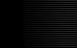

<HTML>
<HEAD>
<META NAME="editor" CONTENT="HTML Assistant Pro 97 - http://www.brooknorth.com/">
<TITLE>Complete Guide - News & Media</TITLE>
<META NAME="description" CONTENT="Palestine's answer to Yahoo! A reviewed listing of all websites by organisations and individuals based in the Gaza Strip and West Bank including East Jerusalem. Intended to track the development of the Internet community here and highlight the websites of the people that actually live in Palestine.">
<META NAME="keys" CONTENT="news, newspapers, media, online media, alternative media, reporters, journalists, magazines, media organisations, media organizations, Palestine, Palestinian, Palestinians, Web, Websites, WWW, links, reviews, search engine, search engines, Middle East, academic, arts, culture, research, education, government, services, human rights, Internet services, organisations, associations, business, commerce, service providers, ISPs, media, personal, homepages, travel, tourism, sites of the month, peace process, information, links, content, golden olive awards">
</HEAD>
<BODY BGCOLOR="FFFFFF" TEXT="000000" LINK="DARKGREEN" VLINK="800000" ALINK="FFFFFF">
<A NAME="top">
<CENTER><TABLE WIDTH=100% BORDER=1 CELLSPACING=0>

<TR>
<TD VALIGN=TOP WIDTH=20%>
<CENTER><A HREF="../web/index.html"></A></CENTER><br><br>
<center>
<A HREF="http://www.jmcc.org/media/reportonline"><BR>Advertisement: Click here</A></center>
<br><br>

<CENTER>
<FORM  METHOD="post" ACTION="http://www.birzeit.edu/cgi-bin/htsearch">
<FONT SIZE=2 COLOR=DARKBLUE><B>Find a site:</B></FONT><BR>
<INPUT TYPE=HIDDEN NAME=config VALUE=htdig>
<input type=hidden name=restrict value="/links/">
<INPUT TYPE=HIDDEN NAME=exclude VALUE="">
<INPUT TYPE="text" SIZE="10" NAME="words" VALUE="">
<INPUT TYPE=HIDDEN NAME=method VALUE="and">
<INPUT TYPE=HIDDEN NAME=format VALUE="builtin-short"><BR>
<INPUT TYPE="submit" VALUE="Search"></FORM>
</CENTER>

<CENTER>
<FONT  SIZE=2>
<B><A HREF="new.html">what's new?</A></B></FONT><BR></CENTER><BR>

<CENTER><FONT  SIZE=2>
<B><A HREF="advert.html">advertise here</A></B></FONT><BR><BR><BR>

<A HREF="./mailist.html"></A><BR></CENTER>

<CENTER><BR><BR>
<A HREF="./search.html"></A><BR>
<BR><BR>
<A HREF="../index.html"></A>

<BR><BR>
<A HREF="http://www.hanania.com/book.htm"><BR>Advertisement: Click here</A></CENTER>

</TD>

<TD VALIGN=TOP WIDTH=60%>
<CENTER></CENTER>
<HR NOSHADE SIZE=2 WIDTH=99%></B>

<!-- banner adverts here -->
<CENTER><A HREF="http://www.birzeit.edu/outloud"><BR>
<FONT  SIZE=1>Advertisement: Click here</FONT></A></CENTER><HR NOSHADE SIZE=2 WIDTH=99%><BR>

<CENTER><FONT  SIZE=5><B>NEWS &amp; MEDIA</B></FONT></CENTER>

<P>

<FONT  COLOR=BLACK SIZE=2>
<UL><B>SITES IN PALESTINE</B><BR>
<LI><A HREF="#esteqlal">Al-Esteqlal(in Arabic)</A>
<LI><A HREF="#alsabar">Al Sabar (in Arabic)</A>
<LI><A HREF="#amin">Arab Media Internet Network - AMIN (in Arabic)</A>
<LI><A HREF="#ayam">Al-Ayyam Newspaper (in Arabic)</A>
<LI><A HREF="#alhayat">Al-Hayat Al-Jadedah (in Arabic)</A>
<LI><A HREF="#alquds">Al-Quds Online (in Arabic)</A>
<LI><A HREF="#assenara">Assenara</A>
<LI><A HREF="#freedom">Freedom</A> 
<LI><A HREF="#jmcc">Jerusalem Media and Communication Centre</A> 
<LI><A HREF="#kul">Kul Al Arab</A>
<LI><A HREF="#outloud">OutLoud</A>
<LI><A HREF="#tjt">The Jerusalem Times - Biladi (in English)</A> 
<LI><A HREF="#palrep">Palestine Report - Jerusalem Media and Communication Centre</A>
<li><a href="#rouah">Shepherds TV - Bethlehem</a>

</UL>
<UL><B>RECOMMENDED SITES OUTSIDE PALESTINE</b><BR>

<LI><A HREF="#ali">Ali Abunimah's Bitter Pill</A>
<LI><A HREF="#diary">A Personal Diary of the Israeli-Palestinian conflict (in English)</A>

</B></FONT></UL>


<HR NOSHADE><BR>
<BLOCKQUOTE>

<A NAME="esteqlal"></A>
<FONT  SIZE=2 COLOR=BLACK>
<b>Al Esteqlal: <a href="http://www.alesteqlal.com">http://www.alesteqlal.com</a></b>
An Arabic language newspaper which is moving to daily publication and is based in Gaza. Good website.<B>Added to Complete Guide 15 September 1999.</B> <A HREF="#top">Top of page.</A></FONT><BR><BR><BR>

<A NAME="alsabar"></A>
<FONT  SIZE=2 COLOR=BLACK>
<b>Al Sabar: <a href="http://www.odaction.org/alsabar">http://www.odaction.org/alsabar</a></b>
An Arabic language bi-weekly newspaper published by the Organization for Democratic Action. The site is attractive and the content is excellent. Mabruuk.<B>Added to Complete Guide 15 September 1998.</B> <A HREF="#top">Top of page.</A></FONT><BR><BR><BR>

<A NAME="amin"></A>
<FONT  SIZE=2 COLOR=BLACK>
<B>Arab Media Internet Network - AMIN (in Arabic and English): <A HREF="http://www.amin.org">http://www.amin.org</A><A HREF="goldeno.html"></A></B> - What an excellent site this is.  Beautifully organised and beautifully presented.   It offers the main news stories, plus an archive full of older articles and stories which are all available online, organised into sections such as "Eye on Jerusalem," "Eye on Amman," "Israeli Affairs," etc.  These articles are mostly in Arabic, but there is also a smaller section for English articles.  There are links to jounalists' homepages, a guestbook, AND an Arabic chatroom!!!  Well worth a visit.  <B>Review last updated: 13 September 1999.</B> <A HREF="#top">Top of page.</A></FONT><BR><BR><BR>


<A NAME="ayam">
<FONT  SIZE=2 COLOR=BLACK>
<B>Al-Ayyam Newspaper (in Arabic): <A HREF="http://www.al-ayyam.com">http://www.al-ayyam.com</A></B> <A HREF="goldeno.html"></A><A HREF="goldeno.html"></A> - Al-Ayyam's circulation is around 5,000 and it's website offers the day's news in a clean layout and presentation. The problem of Arabic language compatability on the Web has been solved by scanning text as images. Some people here prefer Al-Ayyam because it offers a more independent outlook than Al-Quds. See for yourself. <B>Review last updated: 20 December 1997.</B> <A HREF="#top">Top of page.</A></FONT><BR><BR><BR>

<A NAME="alhayat"></A>
<FONT  SIZE=2 COLOR=BLACK>
<B>Al-Hayat Al-Jadedah Online (in Arabic): <A HREF="http://www.alhayat-j.com/">http://www.alhayat-j.com/</A></B> <A HREF="goldeno.html"></A> <A HREF="goldeno.html"></A>- Al-Hayat is another local Palestinian newspaper online, said to be the official organ of the Palestinian Authority. The problem of Arabic language compatability on the Web has been solved by scanning text as images. Nice design sense clear in this simple graphical interface. <B>Added to Complete Guide: 16 January 1997. Review last updated: 20 December 1997.</B> <A HREF="#top">Top of page.</A></FONT><BR><BR><BR>


<A NAME="alquds"></A>
<FONT  SIZE=2 COLOR=BLACK>
<B>Al-Quds Online (in Arabic): <A HREF="http://www.alquds.com">http://www.alquds.com</A></B> <A HREF="goldeno.html"></A> <A HREF="goldeno.html"></A>- Al-Quds is the Palestinian newspaper with the largest circulatation, numbering around 25,000. The problem of Arabic language compatability on the Web has been solved by scanning text as images. Al-Quds Online's material, fresh each day, includes a selection of news, comment and cartoons, all delivered in a striking layout that doesn't take as long to load as one might think. A mirror site now speeds things up. <B>Review last updated: 20 December 1997.</B> <A HREF="#top">Top of page.</A></FONT><BR><BR><BR>


<A NAME="assenara"></A>
<FONT  SIZE=2 COLOR=BLACK>
<b>Assenara: <A HREF="http://www.assenara.com/">http://www.assenara.com/</A></B>
Arabic newspaper based in Nazareth, their URL changed sometime in early 1999,<B>Added to Complete Guide 15 September 1998. Review updated 13 September 1999</B> <A HREF="#top">Top of page.</A></FONT><BR><BR><BR>


<A NAME="freedom"></A>
<FONT  SIZE=2 COLOR=BLACK>
<b>Freedom: <a href="http://www.alquds.net/freedom/">http://www.alquds.net/freedom/</a></b>
Freedom was the first electronic forum to be run inside Palestine, and now they have a website. When you subscribe to Freedom, you receive several mailings each day - news, discussion, announcements. It’s a great source of news and one of the best ways to reach people. The website is new and needs some work -  but there has been a lot of discussion on Freedom about what to include on the site and it promises much.<B>Added to Complete Guide 15 September 1998</B> <A HREF="#top">Top of page.</A></FONT><BR><BR><BR>

<A NAME="jmcc"></A>
<FONT  SIZE=2 COLOR=BLACK>
<b>Jerusalem Media and Communication Centre: <a href="http://www.jmcc.org">http://www.jmcc.org</a></b>
"JMCC was established in 1988 by a group of Palestinian journalists and researchers to provide information on
 events in the West Bank (including East Jerusalem) and the Gaza Strip."  Their website, a great source of information, publishes special reports, its occasional document series (reprints of resolutions, agreements, correspondence and other documents related to the peace process and Palestinian legislation in Arabic and English), a weekly magazine called "This Week in Palestine" (includes information about events, guided tours, where to go, book reviews) and much more. An important and useful resource and be sure to visit their <A HREF="#palrep">Palestine Report</A> online
<B>Added to Complete Guide 2 December 1998</B> <A HREF="#top">Top of page.</A></FONT><BR><BR><BR>

<A NAME="kul"></A>
<FONT  SIZE=2 COLOR=BLACK>
<b>Kul Al Arab: <ahref="http://www.sofnet.co.il/kul-alarab/">http://www.sofnet.co.il/kul-alarab/</a></b>
An Arabic newspaper based in Nazareth. Regularly updated.<B>Added to Complete Guide 15 September 1998</B> <A HREF="#top">Top of page.</A></FONT><BR><BR><BR>
<A NAME="outloud"></A>
<FONT  SIZE=2 COLOR=BLACK>
<B>Birzeit OutLoud <A HREF="http://www.birzeit.edu/outloud/">http://www.birzeit.edu/outloud/</A><A HREF="goldeno.html"></A></B> - The first internet radio station in Palestine, broadcasting a half-hour show each Saturday  at 3pm Palestine time (GMT +2). It's very simple to listen to, all you need is an internet connection, a sound card and Real Audio software (available for free over the internet). Each show is available in Arabic and English and all of the previous broadcasts are available in an archive. Tune into Palestine today!<B>Reviewed 2 November 1998.</B> <A HREF="#top">Top of page.</A></FONT><BR><BR><BR>
<A NAME="tjt"></A>
<FONT  SIZE=2 COLOR=BLACK>
<B>The Jerusalem Times - Biladi (In English): <A HREF="http://www.jerusalem-times.com/">http://www.jerusalem-times.com/</A></B> The Jerusalem Times has resurfaced after a period of being absent from the Internet. The only English-language Palestinian newspaper, the TJT website will be updated weekly with the current issue. <B>Re-added to Complete Guide: 30 March 1998.</B> <A HREF="#top">Top of page.</A></FONT><BR><BR><BR>


<A NAME="palrep"></A>
<FONT  SIZE=2 COLOR=BLACK>
<B>The Palestine Report: <A HREF="http://www.jmcc.org/media/reportonline">http://www.jmcc.org/media/reportonline</A></B> The Palestine Report, published by the Jerusalem Media and Communication Centre, is a valuable English language news digest which has moved from print to the Web. Informative and important news and analysis available through subscription. This website is well-designed and promises to be a useful information source. <a href="./wotm.html">Website of the Month</a>, August 1999<B>Added to Complete Guide 4 August 1999.</B> <A HREF="#top">Top of page.</A></FONT><BR><BR><BR>

<A NAME="rouah"></A>
<FONT  SIZE=2 COLOR=BLACK>
<B>Shepherds TV: <A HREF="http://www.alrouah.com/">http://www.alrouah.com/</A><A HREF="goldeno.html"></A></B> Shepherds is a TV station in Bethlehem. This is a great site with listings of programs, information about presenters and a lot more. It's in Arabic at the time of review but an English site is under construction.</a><B>Added to Complete Guide 20 September 1999.</B> <A HREF="#top">Top of page.</A></FONT><BR><BR><BR>


</FONT></BLOCKQUOTE></P><BR>

<HR NOSHADE SIZE=2 WIDTH=99%>
<BLOCKQUOTE>
<H4>RECOMMENDED SITES OUTSIDE PALESTINE</H4>

<A NAME="ali"></A>
<FONT  SIZE=2 COLOR=BLACK>
<B>ali abunimah's bitter pill: uncovering media myths
about the middle east: <A HREF="http://www.abunimah.org">http://www.abunimah.org</A></B> -  Ali is well-known to us involved with the internet and Palestinian solidarity. This Palestinian living in Chicago is a board member of the Arab American Action Network and his letters monitoring media distortions around the Middle East are eagerly anticipated for their accuracy, thoroughness and wit.  In his spare time Ali monitors national and international media from his Mac, and promptly writes letters pointing out inaccuracies and media bias. Ali’s new website is a treasure trove of facts and well worth a visit. An excellent example of what we can do with this technology. More please! <a href="./wotm.html">Website of the Month</a>, March 1999 <B>Added to Complete Guide: 3 March 1999.</B> <A HREF="#top">Top of page.</A></FONT><BR><BR><BR>
<A NAME="diary"></A>
<FONT  SIZE=2 COLOR=BLACK>
<B>A Personal Diary of the Israeli-Palestinian Conflict, by Nigel Parry: <A HREF="http://www.birzeit.edu/diary/">http://www.birzeit.edu/diary/</A></B> <A HREF="goldeno.html"></A> - The previous Birzeit webmaster Nigel Parry has completed the long-awaited update to his "Personal Diary of the Israeli-Palestinian Conflict". The photodiary logs the realities of the peace process primarily after the Oslo 2 redeployment in the area where Nigel lived and worked - the Palestinian Area A town of Ramallah, the Area B village of Birzeit and the Birzeit University community. Nigel has added new sections including a <i>Birzeit Diary</i> and <i>Media Diary</i>. Other sections include the <I>Intifada Diary: Ten Years After</I>, <i>Closure Diary</i> and the <i>Palestinian Authority Diary</i>.  He has also expanded other parts including an incredible 400% increase in material in the <i>On the Ground In Ramallah</i> section covering the clashes of September 1996. This really is one of the best and most accessible resources concerning the Palestinian situation today. It is attractive, easy to navigate, and its contents will have you enthralled for hours. Two other additions really deserve comment - a new mirror site at <a href="http://www.nigelparry.com">http://www.nigelparry.com</a>, and a discussion board to post questions and opinions on the site. This site should not become just another bookmark, but must be read from "cover to cover".  Nigel is currently looking for funding for a project based on the <i>Diary</i> - go and look at this site for more information.<B>Review last updated: 2 December 1998.</B> <A HREF="#top">Top of page.</A></FONT><BR><BR><BR>

</FONT></BLOCKQUOTE></P><BR>


</TD>


</TD>
<TD VALIGN=TOP WIDTH=20%>
<CENTER><FONT  COLOR=BLACK SIZE=1>
<B>CATEGORY INDEX:</B></FONT></CENTER><BR CLEAR=LEFT>

<FONT  SIZE=2 COLOR=DARKGREEN>


<B><A HREF="./index.html">home<BR>page</A> <BR CLEAR=LEFT><A HREF="./anr.html">academic <BR>&amp; research</A> <BR CLEAR=LEFT><A HREF="./anc.html">arts &amp;<BR>culture</A> <BR CLEAR=LEFT><A HREF="./bnc.html">business &amp;<BR>economy</A><BR CLEAR=LEFT><A HREF="./gns.html">government<BR>& services</A> <BR CLEAR=LEFT><A HREF="./hr.html">human<BR>rights</A> <BR CLEAR=LEFT><A HREF="./ind.html">industry &amp;<BR> products</A><BR CLEAR=LEFT><A HREF="./inc.html">internet &amp<BR>computers</A><BR CLEAR=LEFT><A HREF="./nnm.html">news &amp;<BR>media</A><BR CLEAR=LEFT><A HREF="./om.html">online<BR>memorials</A> <BR CLEAR=LEFT><A HREF="./ona.html">organisations<BR>&amp; associations</A><BR CLEAR=LEFT><A HREF="./ph.html">personal<BR>homepages</A><BR CLEAR=LEFT><A HREF="./pp.html">political<BR>parties</A> <BR CLEAR=LEFT><A HREF="./snu.html">schools &amp;<BR>universities</A><BR CLEAR=LEFT><A HREF="./ti.html">tourist<BR>information</A>
<BR CLEAR=LEFT>
<HR NOSHADE SIZE=2 WIDTH=99%>

<BR><A HREF="./store.html">recommended<BR>reading</A><BR CLEAR=LEFT><BR>
<A HREF="./wotm.html">website of<BR>the month</A> 
<BR CLEAR=LEFT><BR>
<A HREF="./goldeno.html">golden<BR>olive awards</A> 
<BR CLEAR=LEFT><BR>
<A HREF="./glance.html">palestine's<BR>websites at<BR>a glance</A> 
<BR CLEAR=LEFT><BR>
<A HREF="./listserv.html">palestinian<BR>mailing lists</A> 
<BR CLEAR=LEFT><BR>
<A HREF="./kppl.html">key peace<BR>process links</A> 
<BR CLEAR=LEFT><BR>

<A HREF="israel.html">israeli<BR>websites</A> 
</B></FONT></P>
</TD>
</TR>
</TABLE></CENTER>

<BR>
<P ALIGN=CENTER><FONT  SIZE=2 COLOR=BLACK><I>Page by Nigel Parry. Maintained by Adam Hanieh, Birzeit Webmaster, <A HREF="MAILTO:webmaster@birzeit.edu">webmaster@birzeit.edu</A>.</I> </FONT></P>

</BODY>
</HTML>
